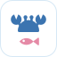

蟹鱼游图标 · 四个方案
同一枚螃蟹加小鱼的字形，换底色和画法。每个方案依次看：大图、手机桌面、站内顶栏（浅色和深色）、浏览器标签页。
A扁平字形
蓝色竖向渐变底，白色实心字形。最像系统自带的 App 图标，和现在站里的天空蓝最搭。
蟹鱼游
蟹鱼游
B细线
纯色蓝底，统一线宽的白色线条，留白多。保留第一版随笔、素雅的气质，但线条规整。
蟹鱼游
蟹鱼游
C浅色
白底加一圈淡蓝细边，蓝色螃蟹，小鱼用脸颊粉点一下。清爽、轻，像工具类大厂应用。

蟹鱼游
蟹鱼游
D夜色双色
深海军蓝底，天空蓝螃蟹配粉色小鱼。更沉稳、有辨识度，在浅色背景上最醒目。
蟹鱼游
蟹鱼游
选定后替换 kaniyu/icon.svg 和顶栏，和其他三项改动（京桥螃蟹图钉、地图🍏提示、详情去掉“怎么去”）一起发布。